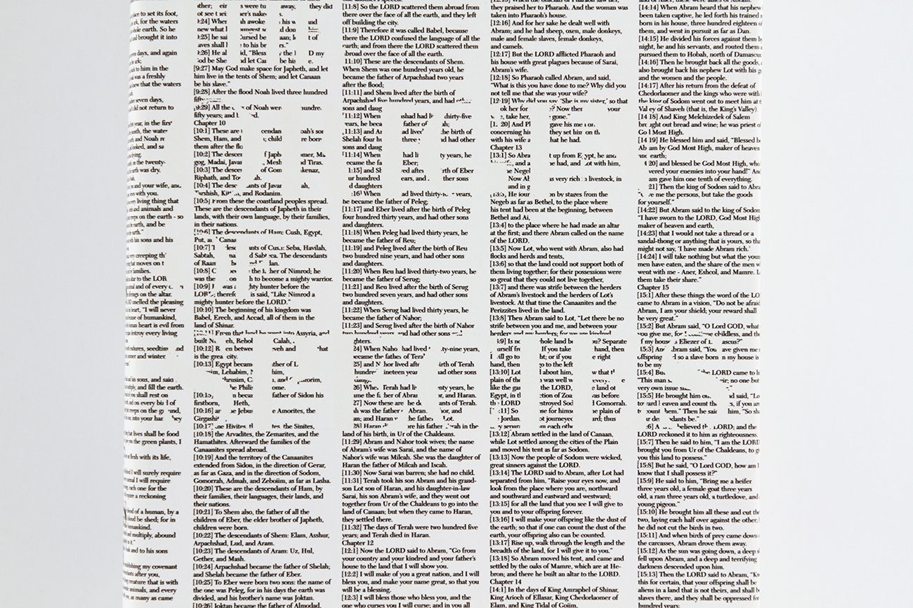
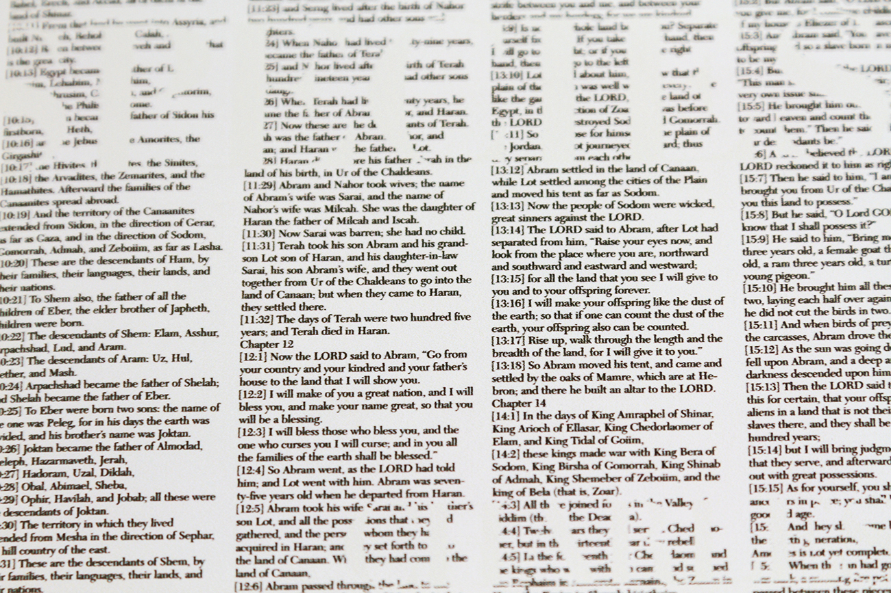
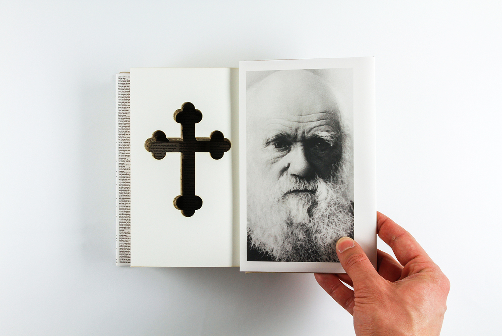

—Darwin

These books exist at the intersection of Creationism and Charles Darwin’s Theory of Evolution. These philosophical viewpoints are oppositional in nature, the former grounded in traditional Christian beliefs and the latter the product of scientific investigation. The entire text of The Book of Genesis wraps around the dust jackets of three identical copies of Darwin’s The Origin of Species, and Darwin’s title takes away from this text. Inside, an aged Darwin looks through symbolic Christian crosses cut into his text. These books seek to explore the implications when one set of beliefs is held so strongly that no other beliefs can be considered.


